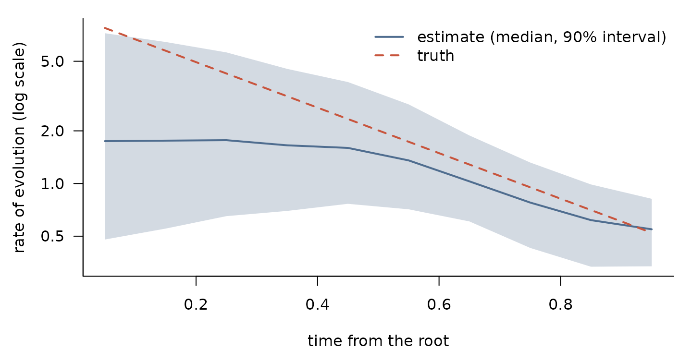
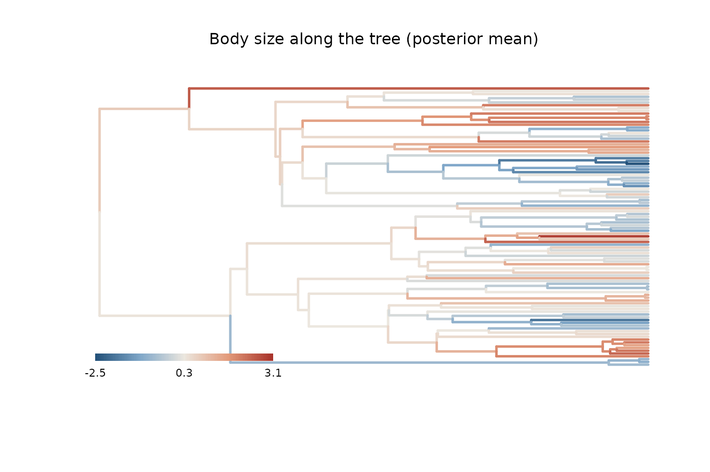

A tour of models: from Brownian motion to phylogeny plus geography
Source:vignettes/model-tour.Rmd
model-tour.RmdThis vignette walks through the models that phylogp can
fit, starting with phylogenetic regression under Brownian motion and
adding one idea at a time: other classical processes, measurement error,
several individuals per species, rates that change through time,
geography, and outlying species. It then shows how to choose among
models and how to predict species without data and ancestral states.
Each section simulates its own data, so the true values are known and
we can see what each model recovers. Every model is a kernel, and moving
from one model to the next only means changing the kernel
argument of phylo_gp(). All fits use Stan, so the vignette
needs cmdstanr and CmdStan.
library(phylogp)
set.seed(2024)
tr <- ape::rphylo(100, birth = 1, death = 0) # a pure-birth tree
tr$edge.length <- tr$edge.length / max(ape::node.depth.edgelength(tr)) # height 1
N <- ape::Ntip(tr)1. Brownian motion and phylogenetic regression
The simplest model of trait evolution is Brownian motion (BM): changes accumulate at a constant rate along every branch, so the covariance of two species is proportional to the time they share. Phylogenetic generalised least squares (PGLS) is a regression whose residuals follow this process.
We simulate log brain size that scales with log body size (slope 0.7), with a residual that evolves by BM plus some species-level variation that is not phylogenetic.
set.seed(1)
body <- kernel_simulate(k_bm(), tr, pars = list(bm1 = list(sigma = 1.5)))[, 1]
res <- kernel_simulate(k_bm() + k_white(), tr,
pars = list(bm1 = list(sigma = 0.6), white1 = list(sigma = 0.3)))[, 1]
d1 <- data.frame(body = body, brain = 1 + 0.7 * body + res[names(body)])
head(d1, 3)
#> body brain
#> t1 -0.9396807 -0.07393112
#> t2 0.0436268 0.97894493
#> t3 -1.2534429 -0.48847486Pure BM (k_bm()) is PGLS. Adding k_white(),
independent variation of each species, gives the phylogenetic mixed
model, which on a time-calibrated tree is the same model as Pagel’s
.
Both can be fitted by maximum likelihood:
fit_bm <- phylo_gp(brain ~ body, d1, tr, k_bm(), method = "optimize")
fit_bmw <- phylo_gp(brain ~ body, d1, tr, k_bm() + k_white(), method = "optimize")
fit_bmw
#> Phylogenetic Gaussian process
#> Formula: brain ~ body
#> Kernel: bm() + white()
#> Tips: 100
#> Likelihood: pruning (linear time)
#> Method: maximum likelihood
#>
#> parameter estimate
#> 1 (Intercept) 0.867
#> 2 body 0.687
#> 3 bm1_sigma 0.497
#> 4 white1_sigma 0.322
#>
#> log-likelihood: -65.341443
sapply(list(BM = fit_bm, "BM + white" = fit_bmw), function(f) AIC(logLik(f)))
#> BM BM + white
#> 190.5519 138.6829or in a Bayesian way, which gives the uncertainty of every parameter. The proportion of residual variance that is phylogenetic, the phylogenetic signal (equal to Pagel’s here), is a function of the posterior draws:
fit1 <- phylo_gp(brain ~ body, d1, tr, k_bm() + k_white())
fit1
#> Phylogenetic Gaussian process
#> Formula: brain ~ body
#> Kernel: bm() + white()
#> Tips: 100
#> Likelihood: pruning (linear time)
#> Method: Bayesian (HMC)
#>
#> parameter mean sd q5 q95 rhat ess_bulk
#> 1 (Intercept) 0.864 0.2315 0.486 1.249 1 3703
#> 2 body 0.688 0.0604 0.589 0.787 1 3471
#> 3 bm1_sigma 0.532 0.1042 0.363 0.705 1 2370
#> 4 white1_sigma 0.320 0.0538 0.237 0.412 1 2621
draws <- posterior::as_draws_df(fit1$fit$draws(c("bm1_sigma", "white1_sigma")))
signal <- with(draws, bm1_sigma^2 / (bm1_sigma^2 + white1_sigma^2))
quantile(signal, c(0.05, 0.5, 0.95))
#> 5% 50% 95%
#> 0.4572182 0.7312588 0.8897449The true signal is .
2. The classical family
Pagel’s transformations, early burst (EB) and Ornstein–Uhlenbeck (OU)
are all kernels too. With method = "optimize" they
reproduce phylolm and geiger to numerical
precision, so a table of the usual models takes a few lines:
kernels <- list(BM = k_bm(), "BM + white" = k_bm() + k_white(),
"Pagel's lambda" = k_lambda(), "Pagel's kappa" = k_kappa(),
"Pagel's delta" = k_delta(), "early burst" = k_eb(),
"OU" = k_ou())
classical <- lapply(kernels, function(k) phylo_gp(brain ~ body, d1, tr, k, method = "optimize"))
aic <- sapply(classical, function(f) AIC(logLik(f)))
data.frame(AIC = round(aic, 1), delta = round(aic - min(aic), 1))
#> AIC delta
#> BM 190.6 51.9
#> BM + white 138.7 0.0
#> Pagel's lambda 138.7 0.0
#> Pagel's kappa 148.9 10.2
#> Pagel's delta 170.3 31.6
#> early burst 192.6 53.9
#> OU 152.9 14.2The two models with independent species-level variation, “BM + white”
and Pagel’s
,
fit best and equally well: they are the same model. On a time-calibrated
tree, an OU model with a single optimum is also the same model as an
accelerating early burst, so their fits cannot be told apart
from extant species alone; see
vignette("kernel-design", package = "phylogp") for how to
check whether two kernels are the same model.
3. Known measurement error
When each species value is a mean with a known standard error, for
example from a meta-analysis, the standard errors enter the model
through se. They are added to the variance of each species,
so precisely measured species count for more.
set.seed(3)
d3 <- d1
d3$se <- runif(N, 0.05, 0.6)
d3$brain <- d3$brain + rnorm(N, 0, d3$se)
fit3 <- phylo_gp(brain ~ body, d3, tr, k_bm() + k_white(), se = "se")
fit3
#> Phylogenetic Gaussian process
#> Formula: brain ~ body
#> Kernel: bm() + white()
#> Tips: 100
#> Likelihood: pruning (linear time)
#> Method: Bayesian (HMC)
#>
#> parameter mean sd q5 q95 rhat ess_bulk
#> 1 (Intercept) 0.906 0.2248 0.533 1.275 1 2603
#> 2 body 0.718 0.0684 0.605 0.826 1 3246
#> 3 bm1_sigma 0.480 0.1297 0.269 0.695 1 1651
#> 4 white1_sigma 0.365 0.0727 0.243 0.485 1 2097The estimates are close to those from the data without measurement error, with somewhat wider intervals.
4. Several individuals per species
Data often come as individuals rather than species means. Keep one
row per individual and give the column of species names in
species. The kernel then describes the species,
k_white() becomes the non-phylogenetic species effect, and
a residual standard deviation within species, within_sigma,
is added. The likelihood is exact and stays linear in the number of
species.
Here we sample one to six individuals per species. Body size varies within species, and the within-species slope is 0.3, smaller than the slope among species (0.7). Splitting the predictor into the species mean and the deviation from it estimates both slopes:
set.seed(4)
ind <- data.frame(species = rep(rownames(d1), sample(1:6, N, replace = TRUE)))
dev <- rnorm(nrow(ind), 0, 0.3)
ind$body <- d1[ind$species, "body"] + dev
ind$brain <- d1[ind$species, "brain"] + 0.3 * dev + rnorm(nrow(ind), 0, 0.2)
ind$body_mean <- ave(ind$body, ind$species)
ind$body_dev <- ind$body - ind$body_mean
nrow(ind)
#> [1] 374
fit4 <- phylo_gp(brain ~ body_mean + body_dev, ind, tr, k_bm() + k_white(),
species = "species")
fit4
#> Phylogenetic Gaussian process
#> Formula: brain ~ body_mean + body_dev
#> Kernel: bm() + white()
#> Tips: 100 (374 rows; within-species sd: within_sigma)
#> Likelihood: pruning (linear time)
#> Method: Bayesian (HMC)
#>
#> parameter mean sd q5 q95 rhat ess_bulk
#> 1 (Intercept) 0.885 0.21443 0.528 1.235 1 4286
#> 2 body_mean 0.671 0.05624 0.579 0.764 1 5949
#> 3 body_dev 0.326 0.03757 0.265 0.387 1 5091
#> 4 bm1_sigma 0.476 0.10694 0.307 0.655 1 3068
#> 5 white1_sigma 0.344 0.05499 0.253 0.434 1 3532
#> 6 within_sigma 0.198 0.00862 0.184 0.213 1 5443Leave-one-out cross-validation then leaves out whole species, and
predict(type = "response") predicts a new individual.
5. Rates that change through time
Early burst assumes that the rate of evolution declines
exponentially. A more flexible alternative lets the rate vary smoothly
through time: k_rate_time() divides the height of the tree
into bins and gives each a log rate with a random-walk prior. We
simulate an early burst, in which the rate falls 20-fold from the root
to the present, and see whether the flexible kernel recovers its shape
without being told.
set.seed(5)
r_eb <- -log(20) # rate at time t: exp(r_eb * t)
y5 <- kernel_simulate(k_eb() + k_white(), tr,
pars = list(eb1 = list(sigma = 3, rate = r_eb),
white1 = list(sigma = 0.05)))[, 1]
d5 <- data.frame(y = y5)
fit5 <- phylo_gp(y ~ 1, d5, tr, k_rate_time(n_bins = 10) + k_white())
rt <- rate_through_time(fit5)
mid <- (rt$start + rt$end) / 2
true <- 3^2 * exp(r_eb * mid) # sigma^2 times the relative rate
op <- par(mar = c(4, 4.5, 1, 1))
plot(mid, rt$median, log = "y", type = "n", las = 1, bty = "l",
ylim = range(rt$q5, rt$q95, true), xlab = "time from the root",
ylab = "rate of evolution (log scale)")
polygon(c(mid, rev(mid)), c(rt$q5, rev(rt$q95)), col = adjustcolor(cols["blue"], 0.25), border = NA)
lines(mid, rt$median, lwd = 2, col = cols["blue"])
lines(mid, true, lwd = 2, lty = 2, col = cols["red"])
legend("topright", c("estimate (median, 90% interval)", "truth"),
col = cols[c("blue", "red")], lty = 1:2, lwd = 2, bty = "n")
par(op)The estimated rates decline towards the present, as in the
simulation, without the exponential shape being assumed. Early in the
history of the tree there are few branches to learn from, so the
estimates there are uncertain and pulled towards a constant rate by the
random-walk prior: the early decline is underestimated, and only the
first interval misses the truth. For rates that vary among clades rather
than through time, see k_relaxed() in
vignette("phylogp", package = "phylogp").
6. Phylogeny and geography
Closely related species are often also close in space, and a trait
can vary with geography for reasons that have nothing to do with
ancestry. k_dist() adds a Gaussian process over any
distance matrix, here the distances between species’ range centres, so
the phylogenetic and the spatial variation are estimated together.
We place the species on a map, with relatives tending to live near each other, and simulate a trait with phylogenetic, spatial and independent parts.
set.seed(6)
xy <- kernel_simulate(k_bm(), tr, nsim = 2) # range centres, phylogenetically clustered
xy <- xy + matrix(rnorm(2 * N, 0, 0.6), N) # plus some dispersal
D <- as.matrix(dist(xy)) # tip labels as row names
K_space <- exp(-D / 1.5) # exponential kernel, length scale 1.5
space <- drop(t(chol(K_space + diag(1e-8, N))) %*% rnorm(N))
y6 <- kernel_simulate(k_bm() + k_white(), tr,
pars = list(bm1 = list(sigma = 0.7), white1 = list(sigma = 0.3)))[, 1]
d6 <- data.frame(y = y6[rownames(D)] + 0.8 * space, row.names = rownames(D))
fit6_phy <- phylo_gp(y ~ 1, d6, tr, k_bm() + k_white())
fit6_space <- phylo_gp(y ~ 1, d6, tr, k_bm() + k_dist(D) + k_white())
fit6_space
#> Phylogenetic Gaussian process
#> Formula: y ~ 1
#> Kernel: bm() + dist(D, exponential) + white()
#> Tips: 100
#> Likelihood: dense
#> Method: Bayesian (HMC)
#>
#> parameter mean sd q5 q95 rhat ess_bulk
#> 1 (Intercept) 0.110 0.550 -0.7122 0.953 1 1576
#> 2 bm1_sigma 0.562 0.107 0.3931 0.746 1 2309
#> 3 dist1_sigma 0.835 0.322 0.4924 1.500 1 1134
#> 4 dist1_ell 1.760 2.034 0.3688 5.749 1 1023
#> 5 white1_sigma 0.229 0.131 0.0243 0.448 1 1382The spatial component (dist1) is a dense kernel, so this
model costs
per evaluation instead of
;
for a few hundred species that is still fast. Its standard deviation is
close to the true 0.8. The length scale ell is poorly
determined with 100 species (its interval is wide, although it contains
the true 1.5), which is typical for spatial processes. Leave-one-out
cross-validation clearly prefers the model with geography:
loo::loo_compare(list("phylogeny only" = loo(fit6_phy),
"phylogeny + geography" = loo(fit6_space)))
#> model elpd_diff se_diff p_worse diag_diff diag_elpd
#> phylogeny + geography 0.0 0.0 NA
#> phylogeny only -16.1 4.8 1.00The exponential kernel used here is valid for any Euclidean distance
and for great-circle distances on the sphere;
kernel_check() tests other choices on the data at hand.
7. Outlying species
A few species far from the rest can pull a Gaussian regression. With
k_white(df = 4) the species-level residual follows a
Student-t distribution with 4 degrees of freedom, which down-weights
them. We add five outliers to the data of section 1:
d7 <- d1
out <- sample(N, 5)
d7$brain[out] <- d7$brain[out] + c(-1, 1, -1, 1, 1) * 2.5
fit7_gauss <- phylo_gp(brain ~ body, d7, tr, k_bm() + k_white())
fit7_t <- phylo_gp(brain ~ body, d7, tr, k_bm() + k_white(df = 4))
rbind(Gaussian = summary(fit7_gauss)[2, c("mean", "q5", "q95")],
"Student-t" = summary(fit7_t)[2, c("mean", "q5", "q95")])
#> mean q5 q95
#> Gaussian 0.7516517 0.6104744 0.8970566
#> Student-t 0.7139526 0.6101820 0.8190757The slope (true value 0.7) and the other parameters are less affected
by the outliers under the Student-t residual. See
vignette("slopes-prediction", package = "phylogp") for more
on robust residuals and on slopes that themselves evolve along the
tree.
8. Choosing among models
Leave-one-out cross-validation (LOO) compares models by how well they
predict each species from all the others. For branch-wise kernels the
leave-one-out densities are computed in linear time, and
loo() returns the usual Pareto-smoothed estimate:
fit1_bm <- phylo_gp(brain ~ body, d1, tr, k_bm())
fit1_ou <- phylo_gp(brain ~ body, d1, tr, k_ou() + k_white())
loo::loo_compare(list("BM" = loo(fit1_bm), "BM + white" = loo(fit1),
"OU + white" = loo(fit1_ou)))
#> model elpd_diff se_diff p_worse diag_diff diag_elpd
#> BM + white 0.0 0.0 NA
#> OU + white -0.4 1.0 0.67 |elpd_diff| < 4 2 k_psis > 0.7
#> BM -34.5 17.8 0.97 2 k_psis > 0.7Pure BM predicts much worse than the models with species-level
variation, while OU adds nothing to BM plus white noise. The diagnostics
flag a couple of species whose Pareto
exceeds 0.7, meaning their importance sampling estimate is unreliable;
loo_refit() refits the model without each of them and
replaces the estimate by the exact value (see
vignette("slopes-prediction", package = "phylogp")).
Leaving out one species at a time mostly asks how well a species is
predicted from its closest relatives. Leaving out whole clades asks
something harder: how well the model predicts a group it has not seen.
loo_group() refits the model without each group and scores
the group’s joint predictive density; the result can be compared with
loo_compare() as well.
clades <- cutree(as.hclust(tr), k = 7) # seven clades
table(clades)
#> clades
#> 1 2 3 4 5 6 7
#> 3 23 24 30 8 11 1
lg_bm <- loo_group(fit1_bm, clades)
lg_bmw <- loo_group(fit1, clades)
loo::loo_compare(list("BM" = lg_bm, "BM + white" = lg_bmw))
#> model elpd_diff se_diff p_worse diag_diff diag_elpd
#> BM + white 0.0 0.0 NA
#> BM -25.0 15.3 0.95 N < 100A model whose advantage disappears when whole clades are left out may be fitting the relationships within clades rather than the process across the tree.
9. Prediction and ancestral states
A fitted model predicts species that are in the tree but have no data, by conditioning the Gaussian process on the observed species. We leave out five species and predict them from their body size:
missing <- sample(rownames(d1), 5)
fit9 <- phylo_gp(brain ~ body, d1[!rownames(d1) %in% missing, ], tr,
k_bm() + k_white())
p <- predict(fit9, newdata = d1[missing, ], tree = tr)
cbind(p[, c("species", "mean", "q5", "q95")], true = d1[missing, "brain"])
#> species mean q5 q95 true
#> 1 t31 2.2887568 1.452843046 3.18466261 2.3543451
#> 2 t91 0.7733394 -0.015971361 1.58290030 0.7208392
#> 3 t79 -0.7477280 -1.417464313 -0.03630258 -0.3638477
#> 4 t48 0.8087231 -0.001191137 1.52776729 0.8384882
#> 5 t97 0.6816089 -0.153634129 1.45359702 1.3873117For intercept-only models of a process along the whole tree,
ancestral() reconstructs the trait at the internal nodes,
again in linear time. Here we reconstruct body size and colour the tree
by the posterior medians:
fit_body <- phylo_gp(body ~ 1, d1, tr, k_bm())
anc <- ancestral(fit_body, tips = TRUE)
head(anc[anc$node > N, ], 3)
#> node mean sd q5 q95
#> 101 101 0.5933526 0.5471136 -0.28459322 1.451125
#> 102 102 0.7778208 0.4885844 -0.02604714 1.568308
#> 103 103 0.3475985 0.4361507 -0.38323955 1.040291
ft <- fit_body$tree
plot_tree_values(ft, anc$mean[match(ft$edge[, 2], anc$node)],
main = "Body size along the tree (posterior mean)")
Where next
-
vignette("phylogp", package = "phylogp"): a full analysis with rates that vary among branches (k_relaxed()). -
vignette("kernel-design", package = "phylogp"): building your own kernels, checking that they are valid, and telling whether two kernels are the same model. -
vignette("slopes-prediction", package = "phylogp"): slopes that evolve along the tree, influential species and robust residuals.